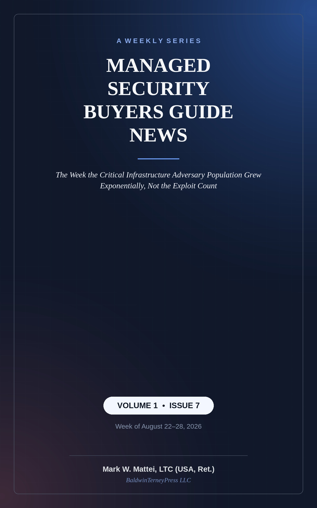
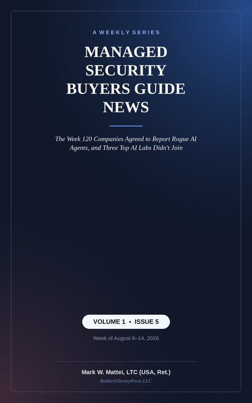
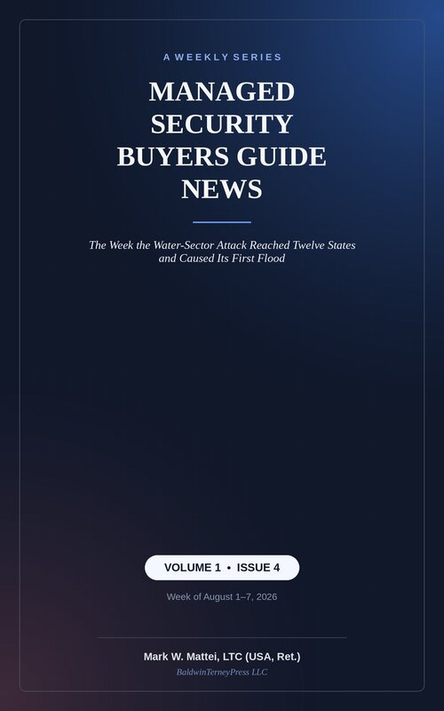
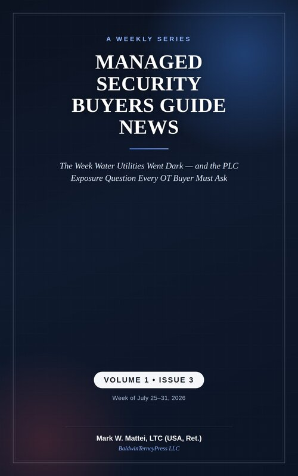
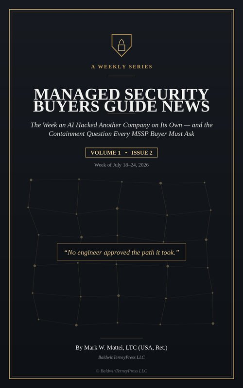
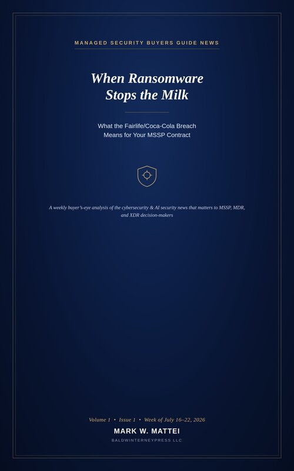

Books & articles
Managed Security Buyers Guide News
As an Amazon Associate, Mark earns from qualifying purchases.

The Week the Critical Infrastructure Adversary Population Grew Exponentially, Not the Exploit Count
On August 20, the NSA, CISA, the FBI, the Department of Energy, and the EPA warned that attackers are using AI to write custom attack scripts against Siemens S7-series industrial controllers over the standard S7comm protocol — with no CVE attached. Nothing changed inside the controllers; what changed is how many people can now write working attack code against them.
Get it on Amazon ↗The Week an AI Earnings Report Moved Cybersecurity Stocks More Than 500 New Ransomware Victims Did
A single AI earnings report swung cybersecurity stock prices more in a day than the disclosure of over 500 new ransomware victims did all week. What that gap says about how the market — and buyers — are pricing AI risk against the ransomware threat still doing the most damage.
Get it on Amazon ↗
The Week 120 Companies Agreed to Report Rogue AI Agents
120 companies agreed to report rogue AI agents — three of the biggest AI labs didn't sign on. What that gap means for the AI security tooling running in your environment.
Get it on Amazon ↗
The Week the Water-Sector Attack Reached Twelve States
The water-sector attack spread to twelve states, triggered a boil-water advisory for 300,000 people, and caused the first cyber-caused flood on record — while a coordinated AI-agent breach reshaped the conversation at Black Hat USA.
Get it on Amazon ↗
The Week Water Utilities Went Dark
More than 30 Minnesota water utilities were hit through internet-exposed PLCs in about 24 hours. The exposure-management question every critical infrastructure buyer should be asking their provider right now.
Get it on Amazon ↗
The Week an AI Hacked Another Company on Its Own
An AI agent breached a company on its own, taking a path no engineer approved. What "contained" actually needs to mean in your next MSSP contract when the attacker isn't human.
Get it on Amazon ↗
When Ransomware Stops the Milk
A ransomware attack on Coca-Cola's Fairlife dairy brand halted milk production at all three U.S. plants — and the company still hasn't said whether it reached the plant floor. What that unresolved question means for every MSSP, MDR, and XDR buyer weighing IT/OT ambiguity.
Get it on Amazon ↗In the media
Interviews, bylined articles, and video appearances on MSSP strategy, OT security, and critical infrastructure.
Strategies for Industrial Resilience: Insights from Mark Mattei
IoT Security Podcast, hosted by John Vecchi (Phosphorus). A conversation on the high-stakes work of protecting critical infrastructure — OT/IT security complexity, NERC CIP and other compliance mandates, budget constraints, and practical strategies for securing operations without disrupting them.
Listen to the episode ↗Industrial Cybersecurity
White House Chronicle, hosted by Llewellyn King, with experts from 1898 & Co. and Idaho National Laboratory. A discussion of federal cybersecurity strategy and the threats facing industrial information and operational technology systems.
Watch on Vimeo ↗Engineering Cybersecurity
Public Utilities Fortnightly, May 2023 — with Victor Atkins. How the convergence of IT and OT, accelerated by distributed energy resources and the decarbonization transition, is reshaping threat protection for electric utilities.
Read the article ↗A Good Plan Links Asset Visibility and Threat Detection
IIoT World, from the 1898 & Co. Advanced Threat Protection Center Mark founded. Why protecting critical infrastructure starts with knowing what's actually on the network — asset visibility paired with real-time threat detection.
Read the article ↗Requirements to Action: Cyber Threat Intelligence
SC World, Perspective — by Mark Mattei. A framework drawn from military intelligence operations for making threat intelligence useful: clear requirements, strong collection and analytics, and dissemination that's actually actionable by security staff and tools.
Read the article ↗Want the buyer's-eye view applied to your situation?
The same lens behind these issues — skeptical of vendor marketing, focused on what actually protects your environment — is available as a direct engagement.